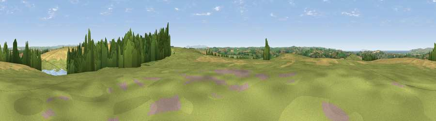

Viewpoint near Weare Giffard
#6350 in England · top 15% of its area beats it · near Weare GiffardThe view, rendered

A 360° render of this exact spot computed from the terrain model, tree cover and land cover — summer colours, afternoon light, calibrated against photographs of famous viewpoints. Real trees, hedges and buildings will differ in detail.
The panorama
Grey silhouette: terrain skyline in each direction (720 bearings, Earth curvature and refraction included). Dashed green: skyline with trees (+15 m) and buildings (+8 m) as obstacles. Blue strip: how far the ground is visible on each bearing.
Where the view opens
Wedge length = distance to the farthest visible ground on that bearing (vegetation-aware). Rings at 10, 25 and 50 km.
What fills the view
42% grassland · 36% cropland · 15% woodland · 5% water · 1% built-up
Angular shares of the visible panorama (visual magnitude), not map area. Landscape diversity 0.53 (0–1 Shannon).
Key numbers
More beautiful places nearby
The staircase of upgrades: each row has a higher view potential than everything closer. Driving times are estimates from straight-line distance, calibrated against real road routing — check an actual route before setting out.
| Place | Direction | Drive | Score |
|---|---|---|---|
| Viewpoint near Weare Giffard | WSW · 0 km | ~1 min | 70.1 |
| Viewpoint near Alverdiscott | E · 1 km | ~2 min | 71.0 |
| Viewpoint near Bideford | WNW · 1 km | ~3 min | 73.5 |
| Viewpoint near Westward Ho! | NW · 6 km | ~13 min | 75.3 |
| Viewpoint near Westward Ho! | WNW · 8 km | ~15 min | 76.2 |
| Viewpoint near Abbotsham | W · 8 km | ~17 min | 76.8 |
| Babbacombe Hill | W · 8 km | ~17 min | 78.7 |
| Viewpoint near Abbotsham | W · 9 km | ~17 min | 79.9 |
51.00232, -4.16272 · source: screening · position refined by local search. Computed location — check access rights before visiting.